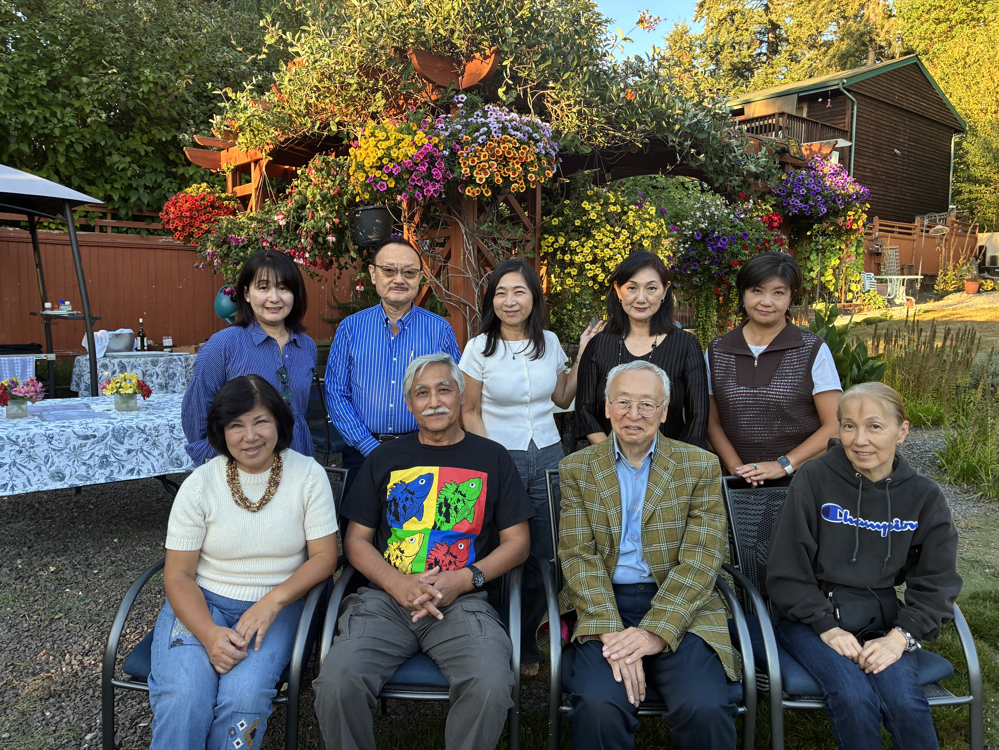
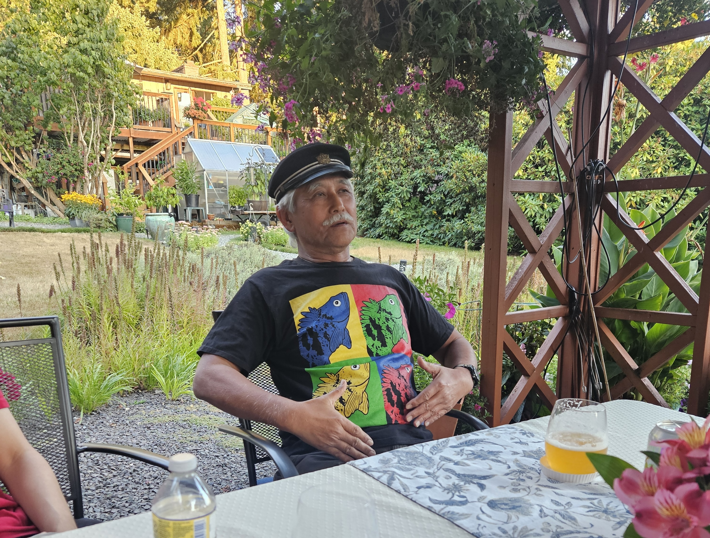
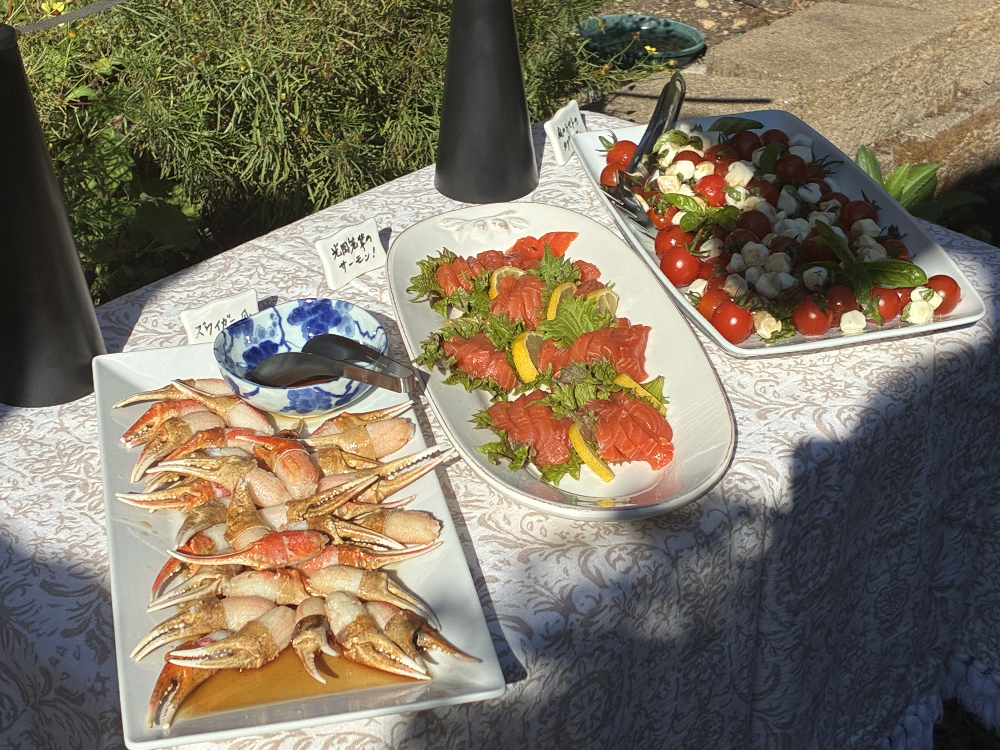
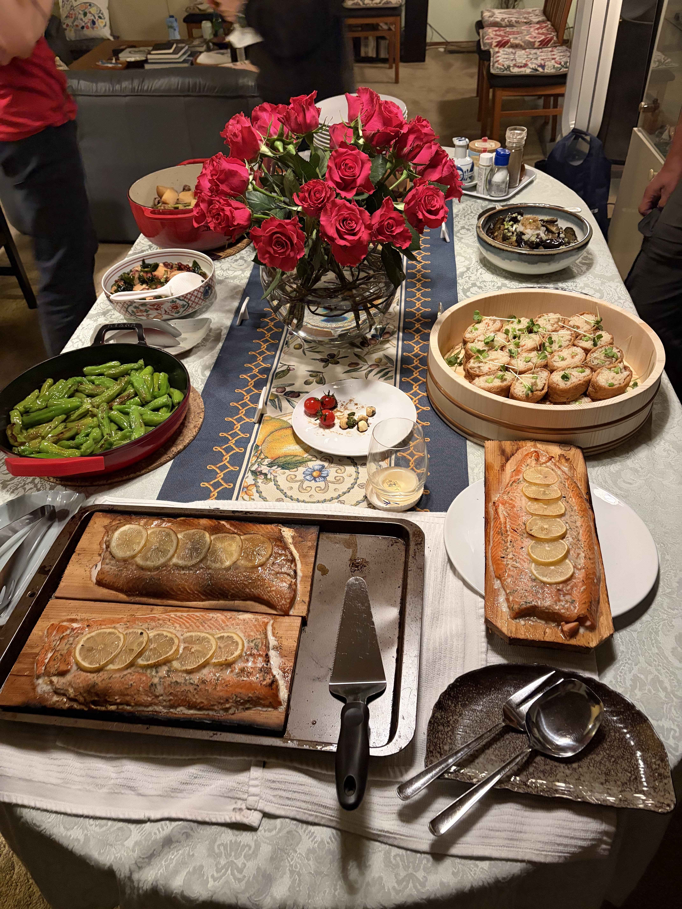
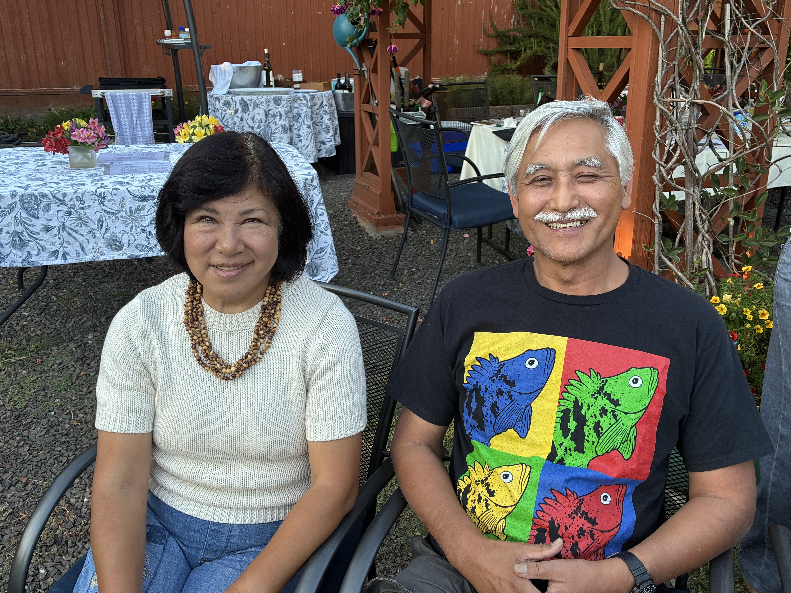
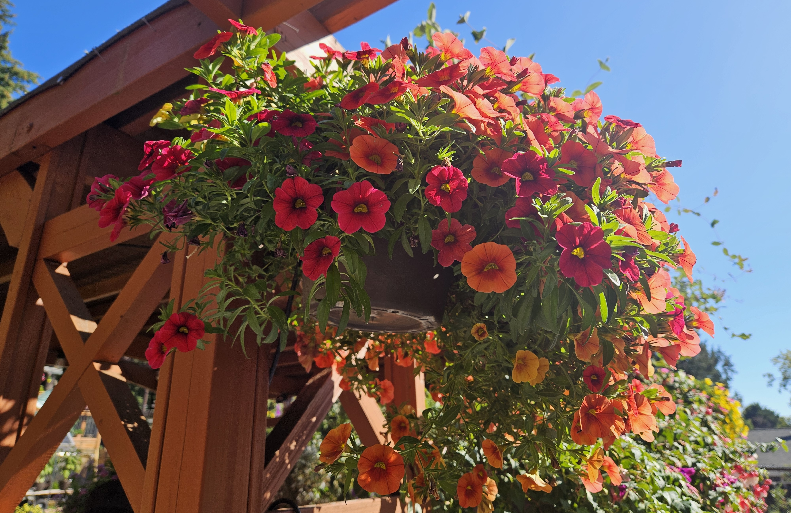
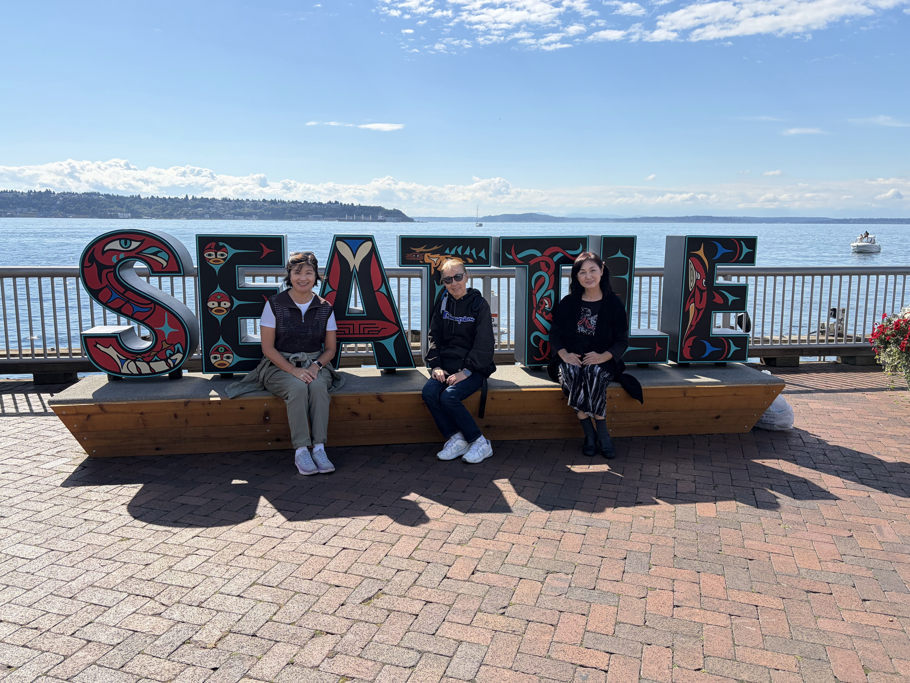
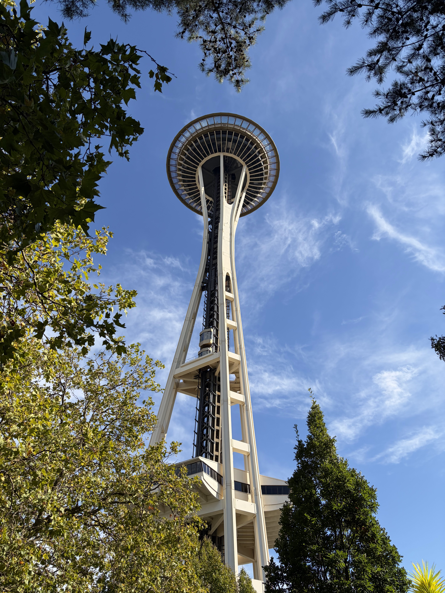
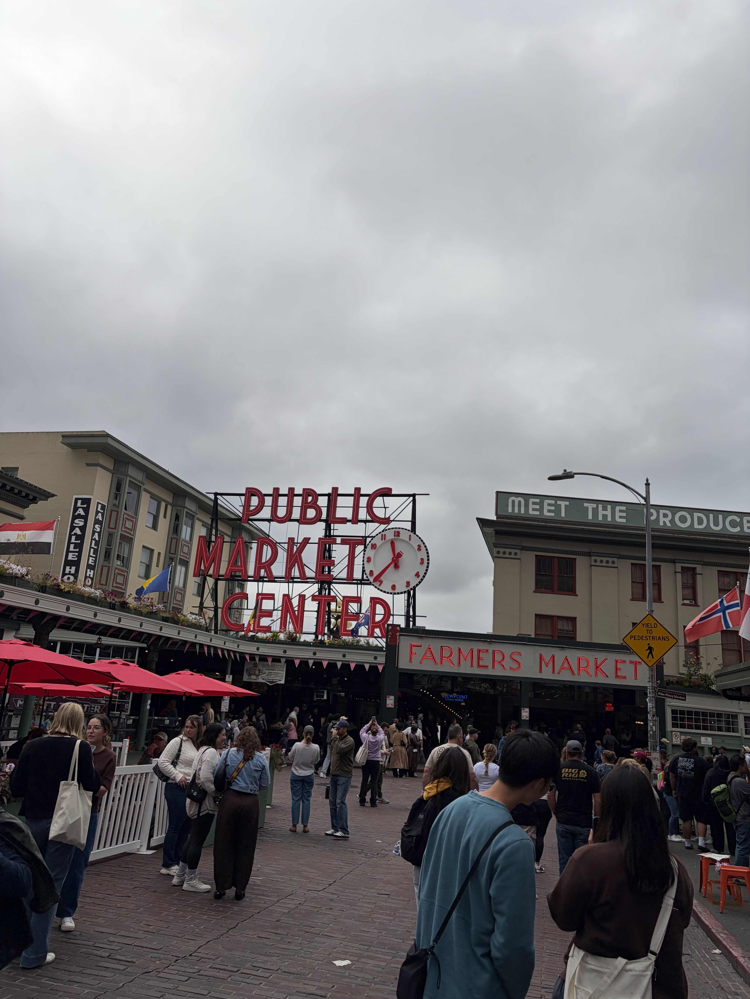

東京都立新宿高等学校 米国同窓会 2026 レポートサイトへようこそ。
全米各地から集まった卒業生たちと過ごした、かけがえのない一日の思い出をお届けします。
2026年 米国同窓会を終えて
2026年9月6日（日）、シアトルの石渡和恵さんご自宅にて、都立新宿高校米国同窓会を開催しました。
参加者はロサンゼルス、サンディエゴ、シカゴ、ニューヨーク、札幌、シアトルと各地から集まり、当時の思い出や近況、人生の話題を分かち合う時間となりました。
特に、光岡則夫先輩の特別講演では、学生運動時代の新宿高校を生きた時代のエピソードが語られ、参加者の皆様にとって大きな感動と刺激となりました。
ご多忙の中、遠方から駆けつけてくださった皆様、そして準備を支えてくださった幹事の皆様に、心より御礼申し上げます。
2026年9月6日 同窓会の記録
合計10名 敬称略
2026年9月6日 総会の後にまとめられた運営方針と今後の方向性
盛り上がった当日の流れとプログラム
参加者が各地から集まり、久しぶりの再会に笑顔が広がる中、にぎやかなに同窓会は始まりました。
幹事代表の挨拶に続いて、再会を祝う乾杯。親しい仲間との再会に、会場全体が和やかに包まれました。
各参加者の近況や人生の節目が語られ、アメリカでの暮らしや今の熱い関心事が共有されました。
光岡先輩が、当時の新宿高校の空気感と学生運動の時代を語り、参加者の皆様に深い感銘を与えました。
おいしい料理と会話が続く中、校歌斉唱や集合写真で日々の思い出を再確認し、夜まで温かな時間が続きました。
写真をクリックすると拡大してご覧いただけます

2026年9月6日 シアトルにて

光岡先輩による学生紛争時代の回想

懇親会の前菜と料理のひととき

美味しい料理と笑顔に包まれた時間

総会を実現してくださったお二人

花と自然に囲まれた晴れやかな空間

自由観光と街歩きの思い出

観光と食事を楽しんだ思い出のひととき

自由観光の小さな思い出
同窓会に参加した仲間からの感想・メッセージ
※ 歌詞は本校・同窓会の公式資料に基づく掲載文を参考にしています
つながりをこれからも大切に
次回の米国同窓会は、今後のご都合や開催地の調整を踏まえて検討中です。
詳細が確定しましたら、メールグループおよびこのサイトにてご案内いたします。
住所変更や新規参加希望の同窓生がいらっしゃいましたら、下記までお気軽にご連絡ください。
このページのURLを同窓生に共有する：